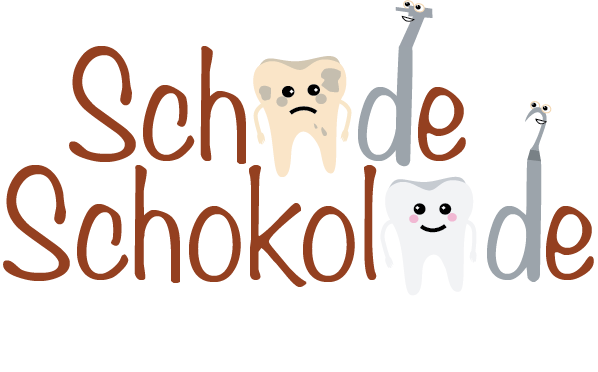
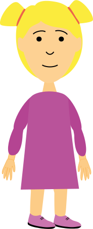
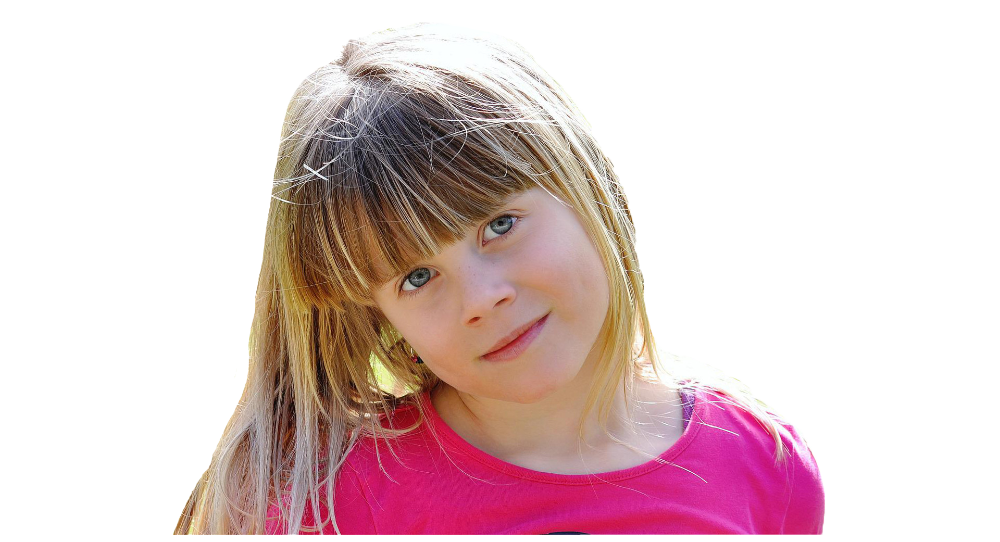

Willkommen bei
ein Studienprojekt von Mona Stingl und Lisa Waletzko
SCHADE SCHOKOLADE ist ein animierter Kurzfilm,
der comedyhafte Aspekte beinhaltet
und beim Zahnarzt im Behandlungsraum auf einem Fernseher gezeigt wird.
Es besteht aus eigen erstellten Illustrationen,
die ein Mädchen beim frühstücken zeigt,
das anschließend wegen Zahnschmerzen zum Zahnarzt muss.

Zahnarztpraxis
60-80% der Menschen in Deutschland haben Angst vor dem Zahnarztbesuch.
Besonders Kinder sind betroffen, die vor Angst anfangen zu schreien, zu schlagen, usw. Damit der Zahnarzt seine Arbeit verrichten kann, möchten wir den Kindern vor der Behandlung den Film zeigen und diese somit beruhigen. Außerdem wollen wir präventiv (vorsorglich) vorgehen, sprich den Besuch beim Zahnarzt so schön wie möglich zu gestalten, damit die Angst erst gar nicht entsteht.
Film
Kleine Kinder sind fasziniert von den bunten, bewegten Bildern, den Geräuschen und der Musik. Sie werden förmlich in den Bann des Fernsehers gezogen, und gemeinsam mit ihren Heldinnen und Helden ihrer Lieblingssendung erleben sie Abenteuer und entdecken die Welt. Fernsehen dient zur Unterhaltung und vertreibt Langeweile, bringt Spaß und Spannung. Außerdem ist es eine Art „Fenster zur Welt“, über das Kinder Dinge über die Welt erfahren können. Viele Familien wollen sich auch einfach gemeinsam einen gemütlichen Samstagabend machen, man macht den Kindern den Fernseher an, weil man als Eltern zum Beispiel mal einen Moment Ruhe für ein wichtiges Telefongespräch braucht. Wenn das Kind krank ist, möchte man es ein wenig ablenken, oder der „Sandmann“ gehört einfach zum Abendritual.
Comedy
Definition
Eine Komödie wird im Allgemeinen als ein Werk definiert, das zur Belustigung oder Unterhaltung des Zuschauers geschrieben wurde. Hierbei werden die Inhalte übertrieben und zugespitzt dargestellt. In einer Komödie können Figuren durchaus Unglück erleiden, doch handelt es sich in der Regel um komödiantische Situationen mit positivem Ausgang. Die Zuschauer fühlen sich zu den Figuren auf der Bühne entweder hingezogen, weil sie sich in ihnen wiedererkennen oder aber sie blicken auf sie herab und verlachen sie, weil sie Schwächen haben, die es zu vermeiden gilt oder weil sie einer niederen Gesellschaftsschicht angehören. Unseren Hauptdarstellern passieren Dinge, die jedem im Alltag passieren können, wodurch die Rezipienten, die Kinder, angesprochen werden (Literary Devices, 2022).
Warum Comedy?
Mit Comedy bringt man Menschen zum Lachen. Gerade kleine Kinder lachen etwa 400-mal am Tag und das fröhlich klingende Gekicher wird dabei schon durch lustige Grimassen oder komisch klingende Wörter ausgelöst. Sie fokussieren sich dabei auf etwas anderes als auf ihre Angst, denn Lachen hilft dabei, Distanz zu einer Situation zu gewinnen und somit die Umgebung zu vergessen. Mit dem Comedy-Aspekt möchten wir die Kinder von ihrer Angst ablenken, sodass sie sich beruhigen und sich für die Behandlung entspannen (Supro, o. D.).
Merkmale
o Comedy zeichnet sich zudem durch viele bunte knallige Farben aus, welche wir im Film mit den bunten Illustrationen einbringen (Filmsprache, 2022). o Vor allem für Kinder: Sprechende Tiere und lustige Geräusche
Unsere Zielgruppe sind Kinder zwischen 3-7 Jahren,
da Kinder bereits in diesen Jahren regelmäßig zum
Zahnarzt gehen.
Damit wir Kinder in dem Alter aber nicht überfordern,
versuchen wir die Szenen nicht zu überladen
und in gewissermaßen realitätsgetreu zu animieren.
Vor allem da es 3-7-Jährigen noch nicht möglich ist,
eigene gedankliche Schlüsse zu ziehen,
denn sie greifen noch auf Erfahrungen zurück
und fangen erst ab dem achten Lebensjahr an,
das logische Denken an zu lernen
(Kindererziehung, o. D., Abschn. 3. Kapitel).
Zielgruppe
Ella Kunte
Ella Kunte ist 6 Jahre alt
und lebt mit ihrer Familie in einem Nebenort von Dresden.
Sie ist ein Einzelkind und hat eine Katze namens Tommy.
Sie liebt es in die Schule zu gehen
und mit ihren Freunden zu spielen.
Ella ist sehr aufgeschlossen und freundlich.

"Am liebsten spiele ich mit meinen Freunden im Kindergarten, aber auch in meiner Freizeit."
- Ella
- Likes
- Kontakt zu Freunden
- Spielen
- Schokolade
- Dislikes
- Langeweile
- Zahnarztbesuche
- Brokkoli
- Ziele
- Gute Noten
- Spaß
- Neue Dinge entdecken